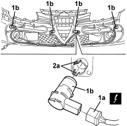

5580H20 FRONT SENSORS OF SYSTEM FOR DETECTING OBSTACLES DURING PARKING R R
- Path
- Procedures > 55 ELECTRICAL EQUIPMENT > 5580 SPECIAL ACCESSORIES > 5580H PARKING OBSTACLE DETECTION DEVICE > 5580H20 FRONT SENSORS OF SYSTEM FOR DETECTING OBSTACLES DURING PARKING R R
- Kind
- repair procedure (removal / refitting; the operation number is the code)
- Applies to
- all engines; all production periods
- Interactive page
- https://sloeber94.github.io/elrnDB/alfa/159/en/#/939004813
Applies to: all engines; all production periods
 Removing
Removing
 Refitting
RefittingOp. 7055B54 UNDER ENGINE PROTECTION/GUARD - R.R.
1. Disconnect the electrical connection (1a) for the parking sensor (1b) concerned.
Description | Component |
|---|---|
PARKING SENSOR UNIT |
2. Remove the parking sensor (2a) in question by releasing it from the retainers (2b).

Applies to: all engines; all production periods
Refitting
Removing- Check that the sensor is not damaged.
- Place the parking sensor in position and attach it to the retainers.
- Connect the electrical connection for the parking sensor.